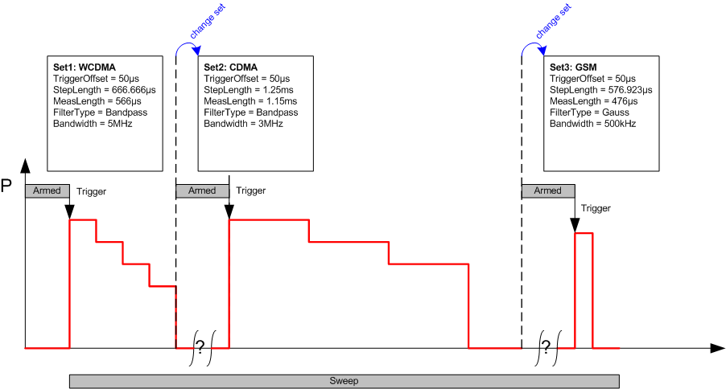

The list mode can be extended to measure power steps with different filter settings, step lengths, measurement lengths, and trigger offsets. This extension requires a "Retrigger Preselect" trigger mode (see Figure "Retrigger Preselect mode"). The R&S CMW needs a switching period (<500 µs) to adapt to a new parameter set.
A typical application for the extended list mode is a measurement on an uplink/reverse link signal which is switched over from one network standard to another. An example is shown below.

The parameter sets (set 0, set 1, ..., set 31) can be configured in the "Power Configuration" dialog ("Measurement Control > Parameter Set List").
Predefined parameter sets for GSM, WCDMA, TD-SCMA, CDMA2000® 1xRTT, CDMA2000® 1xEV-DO, LTE, Bluetooth®, WLAN and WiMAX are available, see "Measurement Settings and Predefined Parameter Sets".
To configure the extended list mode, one of the predefined parameter sets is assigned to each list step.